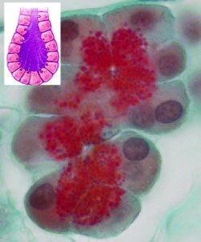
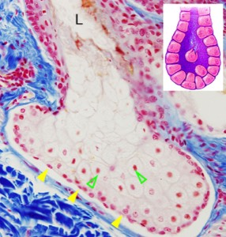
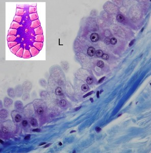

b. Je achterhaalt de secretiewijze: aangemaakte stoffen kunnen namelijk op verschillende manieren de cel verlaten.
i. Bij een merocriene secretie wordt het secreet via een exocytose-achtig proces uitgescheiden en blijft de cel, inclusief het apicale oppervlak, intact.
ii. Bij een apocriene secretie, stulpt het apicale deel van de cel (met daarin het secreet) uit in het lumen en wordt het vervolgens in zijn geheel afgesnoerd.
iii. Bij een holocriene secretie wordt de volledige cel eerst volgepropt met secretieproduct en zal ze vervolgens openbarsten en afsterven. Bij holocriene klieren vind je nabij de afvoergangen cellen waarbij het chromatine in de kern zeer sterk gecondenseerd is (=pycnotisch).
Benoem de secretiewijze: merocrien- apocrien-holocrien.
i. Bij een merocriene secretie wordt het secreet via een exocytose-achtig proces uitgescheiden en blijft de cel, inclusief het apicale oppervlak, intact.
ii. Bij een apocriene secretie, stulpt het apicale deel van de cel (met daarin het secreet) uit in het lumen en wordt het vervolgens in zijn geheel afgesnoerd.
iii. Bij een holocriene secretie wordt de volledige cel eerst volgepropt met secretieproduct en zal ze vervolgens openbarsten en afsterven. Bij holocriene klieren vind je nabij de afvoergangen cellen waarbij het chromatine in de kern zeer sterk gecondenseerd is (=pycnotisch).
Benoem de secretiewijze: merocrien- apocrien-holocrien.

De kliercellen stellen hun secretieproduct vrij door exocytose. Het apicale celdeel blijft intact. Dit is een merocriene secretiewijze.

Bij deze klier zie je intacte cellen (pijlpunten) tegen de basaalmembraan aan. Naarmate de cellen opschuiven naar het lumen (L), stapelen ze meer secreet op. Naar de afvoergang toe zie je pycnotische kernen (open pijlpunten). De cellen barsten open en het geheel wordt uitgescheiden. Dit is een holocriene secretiewijze.

Ter hoogte van het lumen (L) van deze klier zie je afgesnoerde celstukjes. Dit is een typische apocriene secretiewijze.
Vordering zelfstudie klierepitheel: